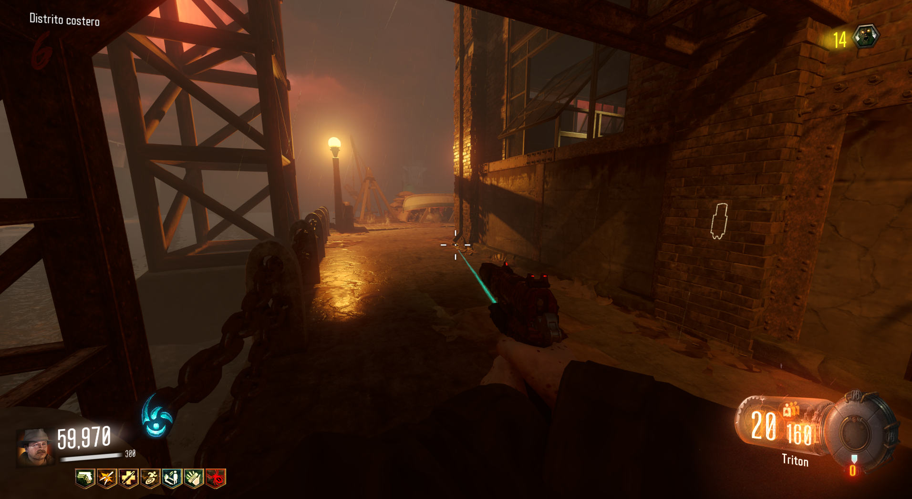

Para tener la mina trampa de donuts, lo primero será comprar las minas trampas. Están en un lateral del ring de boxeo de Waterfront.

Matar: Deberemos de matar a 1 zombi en cada uno de los siguientes carritos. Cada vez que logremos uno, la risa de Samantha sonará.